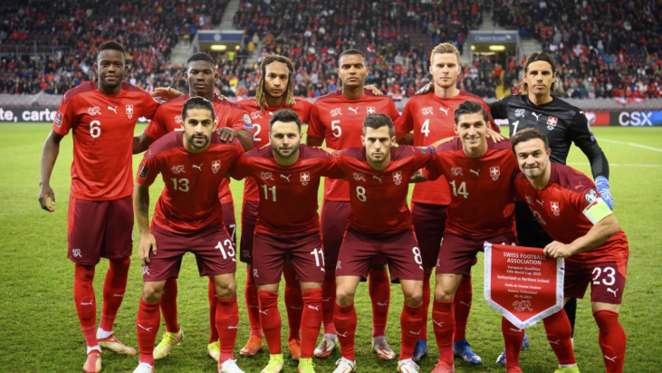

COPAS QUE JÁ PARTICIPOU:
A Suíça participou de sua 11ª edição da Copa do Mundo de futebol em 2018. As melhores participações da Suíça foram nas Copas do Mundo de 1934, 1938 e 1954 quando a seleção suíça chegou às quartas-de-final. Em 2022 Fará sua 12° participação que será no Catar/Qatar

PREMIAÇÕES QUE JÁ ALCANÇOU
Não obteve títulos em Copa do Mundo.
NOME DO TÉCNICO:
Murat Yakın
PRINCIPAIS JOGADORES
Gavranović
Embolo
Zakaria
Tabela de jogos
| Data/Hora | Estádio | Adversário |
|---|---|---|
| 24 nov 2022 / 13h00 | Estádio Al Janoub | Camarões |
| 28 nov 2022 / 19h00 | Estádio 974 (Estádio Ras Abu Aboud) | Brasil |
| 2 dez 2022 / 22h00 | Estádio 974 (Estádio Ras Abu Aboud) | Camarões |